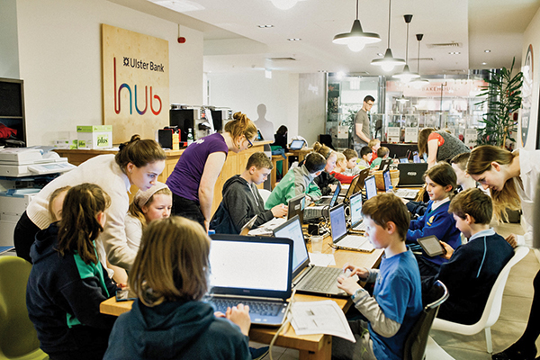

Coming to Maryborough soon.
What is a CoderDojo?CoderDojo is a global, volunteer-led movement of free, open coding clubs (Dojos) for young people aged 7 to 17!
At a Dojo, the participants, who we call Ninjas, learn how to code, develop websites, apps, programs, and games, and explore technology in a fun and creative way. Ninjas meet like-minded peers, work on exciting team and individual projects, and learn valuable social and transferable skills for the future.
Dojos are typically set up by one lead volunteer, known as the champion. The Dojo champion is the 'project manager' of the club. The champion usually has a team of volunteers who help them run their club.
CoderDojo’s mission is to give young people around the world the opportunity to learn to program computers within a social and safe environment. Because CoderDojo is an open-source movement, anyone anywhere can volunteer to set up a club and each Dojo is unique and operates autonomously. This means every club will differ slightly. However, all verified Dojos are committed to live by the CoderDojo Charter and share the CoderDojo ethos: to be inclusive, free, open, and collaborative.
One of the founding principles of CoderDojo is ‘One rule, be cool.’ This means, in short, that we should behave kindly towards each other! This applies to Ninjas, parents, guardians, and volunteers.
Pictured: Children learning at the coder dojo. Photo by Livia Figueiredo. Courtesy of Docklands Photo Agency.